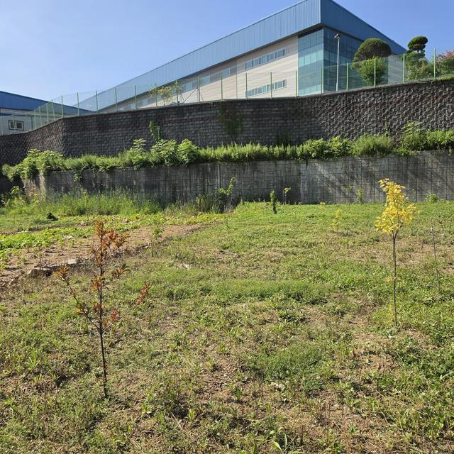

정부가 지금,
전국 농지를 한 필지씩
조사하고 있습니다.
농림축산식품부가 2026년 사상 처음으로 전국 농지 전수조사를 시작했습니다. 위성·AI·드론으로 살피고, 조사원이 현장을 찾아갑니다.
 농민신문 · 2026.05.21
헌정 사상 최초 농지 전수조사 착수
농민신문 · 2026.05.21
헌정 사상 최초 농지 전수조사 착수
 파이낸셜뉴스 · 2026.05.17
첫 전국 농지 전수조사, 위성·AI·드론 활용
파이낸셜뉴스 · 2026.05.17
첫 전국 농지 전수조사, 위성·AI·드론 활용
 팜인사이트 · 2026.07.31
전수조사 결과 27% “위반 의심”…8월부터 심층조사 돌입
팜인사이트 · 2026.07.31
전수조사 결과 27% “위반 의심”…8월부터 심층조사 돌입
 대한민국 정책브리핑 · 2026.05.08
처분명령 강화 ‘농지법’ 개정안 통과
대한민국 정책브리핑 · 2026.05.08
처분명령 강화 ‘농지법’ 개정안 통과
※ 기사 제목·이미지의 저작권은 각 언론사에 있으며, 원문 링크 안내 목적으로만 표시합니다.
숫자로 보면
더 분명합니다.
-
10,490,000필지
2026년 조사 대상
1996년 이후 취득한 농지 전부. 매매·상속·증여·경매를 가리지 않습니다. 그 이전 취득 농지는 2027년에 조사합니다.
-
550,000필지
현장 심층조사 · 8~12월
조사원이 직접 땅을 찾아가 실제 이용상태를 확인합니다. 수도권·토지거래허가구역·경매 취득 농지가 우선입니다.
-
27%
기본조사에서 ‘위반 의심’
조사 대상 농지 가운데 약 4곳 중 1곳이 위반 의심으로 분류돼 심층조사로 넘어갔습니다. (2026.7.30 농식품부 발표 보도)
-
1년
처분의무 기간
처분사유가 확인되면 1년 안에 처분해야 합니다. 이 기간에 실제 영농 전환 등 유예 요건을 검토할 수 있습니다.
-
25%
이행강제금 · 농지가액 기준
처분명령까지 이행하지 않으면 농지가액의 25%. 요건이 계속되면 매년 반복될 수 있습니다.
출처: 농림축산식품부 「농지 전수조사 시행지침」·「추진계획」(2026), 농식품부 브리핑(2026.7.30), 농지법 제10조·제63조
이런 땅이라면,
지금 확인해 보세요.
- 상속받고 그대로 둔 농지
- 몇 해째 쉬고 있는 농지
- 멀리 살아 직접 못 가는 농지
- 다른 사람에게 맡겨 둔 농지
- 경매·허가구역에서 취득한 농지
- 조사 안내나 통지를 받은 농지

통지를 받아도,
곧바로 부과되지는 않습니다.
법이 정한 다섯 단계가 있습니다. 지금 어디에 있는지 아는 것이 먼저입니다.
- 1
실태조사
지자체가 실제 이용상태를 조사합니다.
전수조사 시행지침 - 2
처분의무 통지
처분사유가 확인되면 1년 안에 처분할 의무가 생깁니다.
농지법 제10조 - 3
처분명령
기간 안에 처분하지 않으면 6개월 안에 처분하라는 명령이 내려집니다.
농지법 제11조 - 4
미이행
정당한 사유 없이 명령을 이행하지 않은 경우입니다.
농지법 제63조 - 5
이행강제금
농지가액의 25%. 요건이 계속되면 매년 반복될 수 있습니다.
농지법 제63조
기회도 있습니다 — 처분명령 유예 농지법 제12조
직접 농업경영에 이용하거나 한국농어촌공사 등과 매도위탁계약을 맺는 등 요건을 갖추면 처분명령을 3년간 유예할 수 있습니다. 2026년부터는 유예 요건을 매년 확인합니다.
기한은 흐릅니다
이미 부과된 이행강제금은 이후에 명령을 이행해도 징수됩니다. 부과에 대한 이의제기는 고지받은 날부터 30일 이내입니다. 통지를 받으셨다면 기한부터 확인하세요.
25%는 얼마일까요.
농지가액 × 25% · 1회 부과 기준 단순 계산
요건이 계속되면 매년 다시 부과될 수 있습니다.
※ 단순 계산 예시입니다. 실제 부과 여부와 금액은 개별 농지의 상황과 행정절차에 따라 다릅니다. 올바른농지는 처분명령·이행강제금의 취소나 면제를 보장하지 않습니다.
이야기는
채널에서 이어가요.
농지 위치와 지금 상황을 편하게 남겨 주세요. 대표가 직접 확인하고 연락드립니다. 첫 상담은 무료이며, 비용은 범위를 확인하고 동의하신 뒤에만 발생합니다.
- 카카오톡 채널올바른농지 채널에서 상담하기
- 전화 상담 · [상담 가능 시간][상담전화]